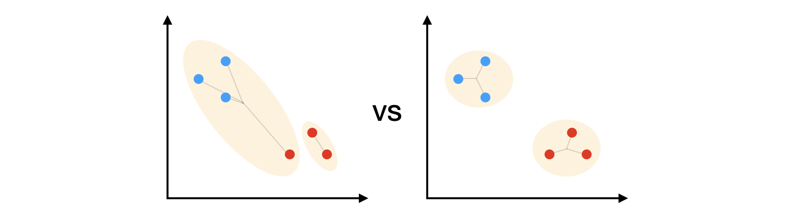

Slot 4 · showing the LINKAGE on the scatter — and whether DISTANCE can be a control
Two questions from review: the dots are hard to read while the tree is being built, and the linkage control does not appear to change the picture. The second is a real defect and it explains the first. The scatter currently draws every merge as one line between the two cluster centres — which is what centroid linkage measures and none of the other three. Average, complete and Ward all look identical because the geometry that distinguishes them is never drawn.
§1 · THE NOTEBOOK ALREADY DRAWS THIS, and the widget should match it
Cells 18, 22 and 25 carry these three diagrams. The vocabulary is consistent and it answers the colour question directly: a pale blob per cluster, the points coloured by cluster, and the lines the linkage actually measures. Note that only the TWO clusters being merged are ever coloured — which is also how a 20-point animation avoids needing twenty colours.
Complete, cell 22
ONE line: the two furthest members
Average, cell 18
EVERY cross pair, faint
Ward, cell 25
spokes to the centre — a bad merge beside a good one

§2 · THE SAME MERGE, THE THREE LINKAGES — drawn the notebook's way
One moment in one run, with the two clusters about to join. Every panel is the same data and the same step; only the linkage differs. This is what the control should look like when it is doing something.
§3 · CANDIDATES FOR THE SCATTER MID-BUILD
Same state in all three — thirteen merges done, the fourteenth in flight. A is what ships today, and is the panel that was circled.
ASK 1. A (today), B (notebook-style: the two clusters in play coloured and blobbed, the linkage's own lines drawn) or C (B, plus every other formed cluster shown as a faint blob so the whole partition is visible at once)? I recommend B — C shows more but the faint blobs compete with the two that matter, and the notebook's own figure deliberately shows only the pair being merged.
§4 · DISTANCE — measured, and it is not the same answer for both acts
node widgets/_lab/hc-distance.mjs prints all of this.
Pearson is degenerate on act 1 and cannot be offered there: a correlation between
two 2-vectors is always ±1, so over 190 point pairs it takes three distinct values
(0, −0, 2) where Euclidean takes 190. Cosine is non-degenerate but measures the angle from
the ORIGIN, so it separates this stage only because the groups sit either side of zero —
shift the cloud and it collapses. Euclidean and Manhattan are the two that are honest on
a plotted point cloud, being the two that do not care where the origin is.
And Manhattan is not cosmetic: against Euclidean it produces a different tree on essentially every seed, while the CUT it lands on agrees 95% of the time when the groups are real and 53% when they are not. That is the widget's own claim again, made by a second control — two arbitrary choices, neither of which matters when the structure is real and both of which decide the answer when it is not.
On act 2 all four are meaningful, because a gene row is a profile across twenty samples —
which is exactly the case the notebook says cosine and Pearson are for. Measured at
cutree_rows = 5: Euclidean and Pearson and cosine keep all four planted
blocks whole, Manhattan keeps three — but under cosine and Pearson the ten
unstructured genes stop sharing a box, so act 2's headline readout changes with the
distance too.
ASK 2 — does distance become a control, and where?
(a) No distance control. Linkage alone carries the argument; the notebook's five
measures stay in the notebook.
(b) Euclidean and Manhattan, both acts. Honest everywhere, one extra segmented
control, and it reinforces the claim with a second arbitrary choice.
(c) Euclidean and Manhattan on act 1; all four once the matrix is open, where
profiles make cosine and Pearson mean something. Truest to the notebook and the most
build — the option list has to change with the act.
I recommend (b), with cosine and Pearson named in the control's own detail text
as belonging to profiles rather than to points.
Not decided here: whether Ward's spokes are legible at twenty points (the notebook draws six), and whether the merge already made should keep its faint line at all once the linkage marks are carrying the story.